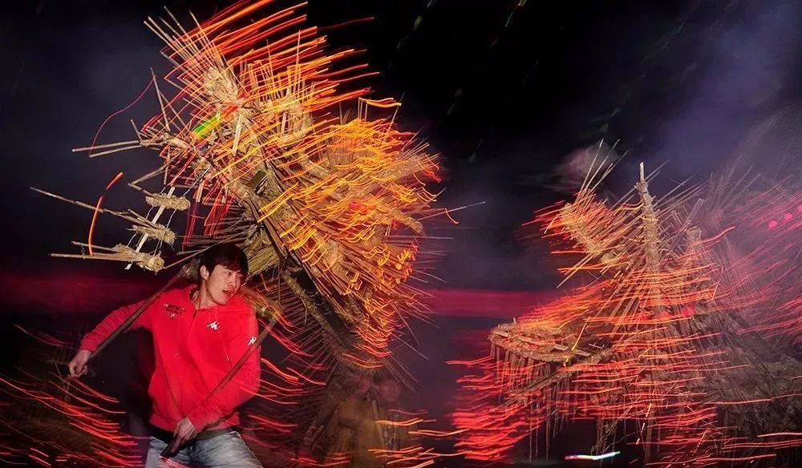
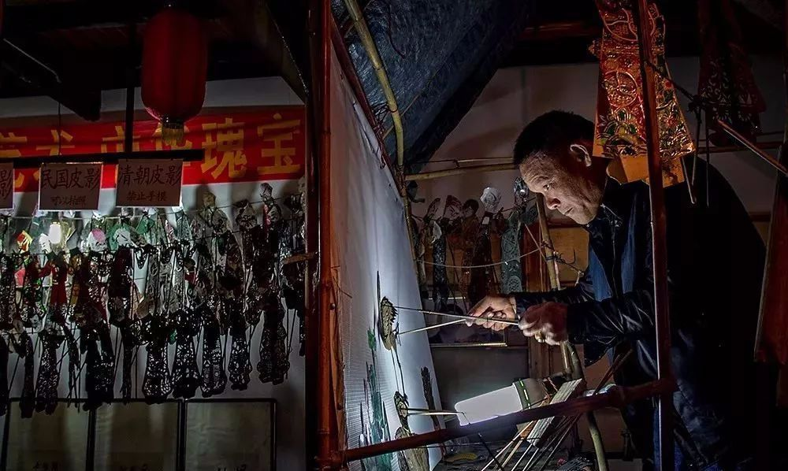
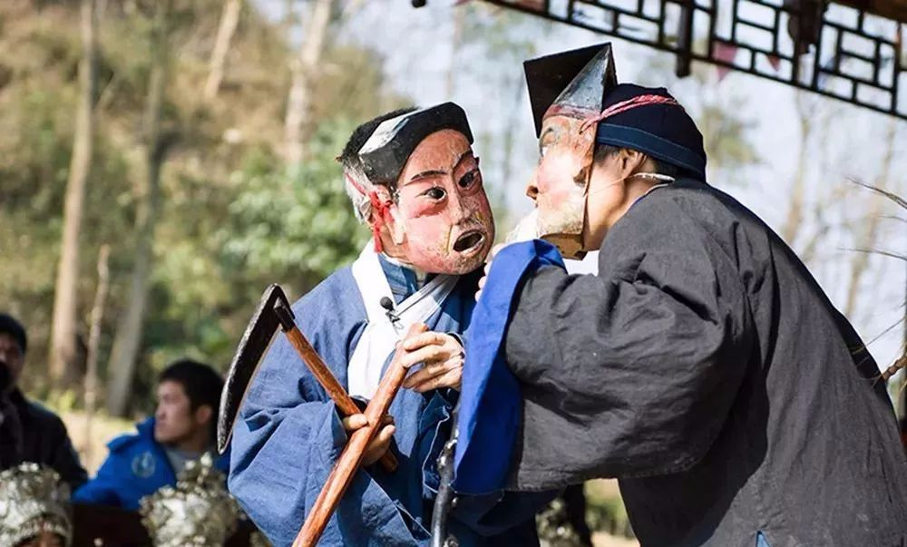
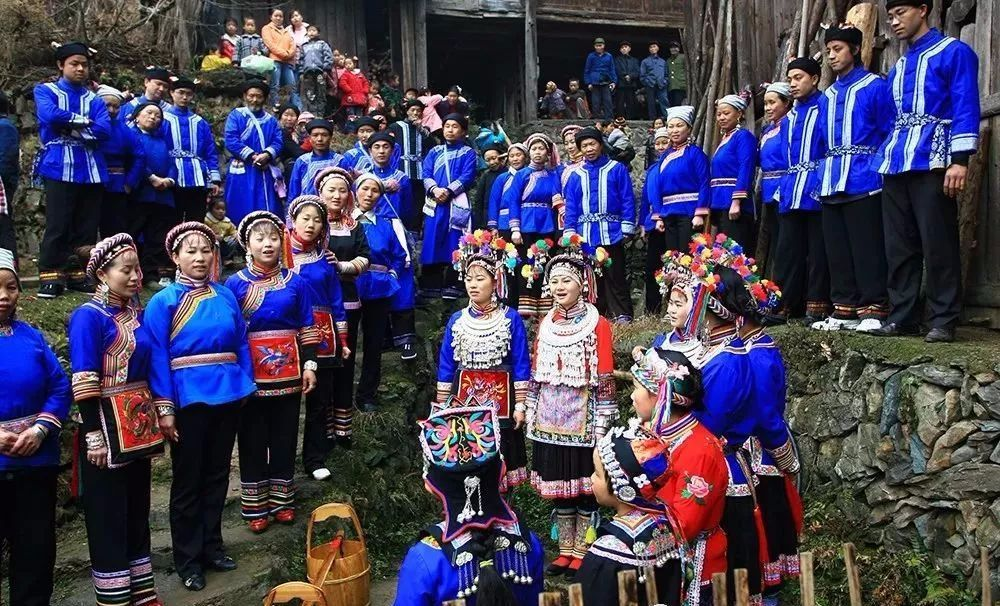
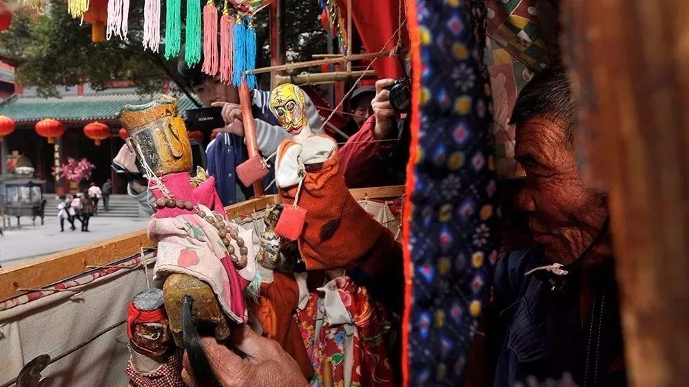
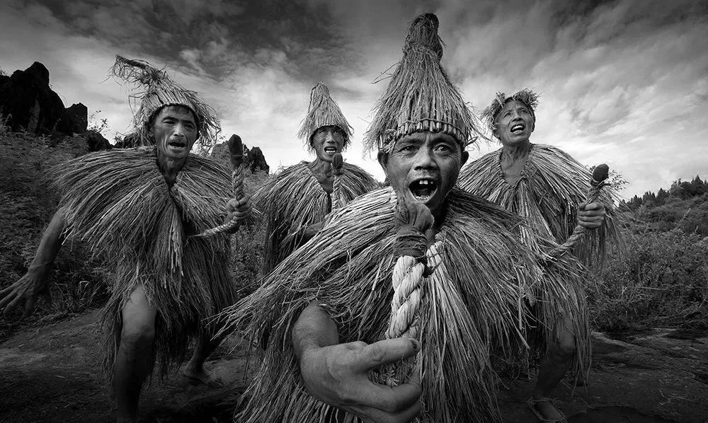
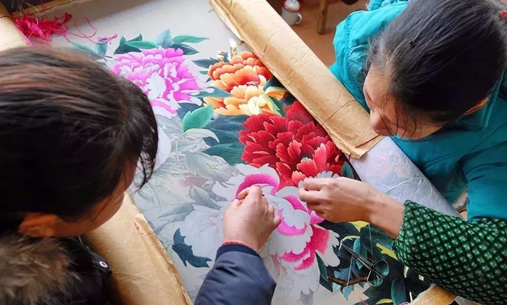

湖南部分非物质文化遗产
-

香火龙
香火龙以汝城所产稻草、棕叶、竹片、竹竿及特制龙香为主要制作材料，用当地传统的扎制工艺制成。舞香火龙的招龙仪式多在每年的元宵节期间举行。 -

湖南皮影戏
历史悠久，广泛流传于湖南各地。其影人多为“纸偶”，在影型制作上吸收了剪纸、绘画、雕刻等多种民间艺术的精华，雕刻刀法丰富，虚实结合，繁简相映，造型美观，惟妙惟肖。 -

怀化新晃侗族傩戏
侗族傩戏“咚咚推”因演出时在“咚咚”（鼓声）、“推”（一种中间有凸出的小锣声）的锣鼓声中跳跃进行，“咚咚推”由此而得名。 -

靖州苗族歌
它是锹里苗族生息状况记录、人际情感交流、民族文化传承的重要载体，更是他们日常生活不可缺少的重要组成部分。 -

邵阳布袋戏
系口传心授。其表演方式和表演技巧为：一个艺人一副戏担，不管大戏小戏、文戏武戏，生旦净末丑，吹打弹唱耍，全靠艺人一个人手、脚、口、舌并用，十指灵活调度。以武打戏、鬼怪戏、滑稽戏居多。音乐以祁剧唱腔为主，风格清新、古朴、纯真，自成流派。 -

湘西毛古斯舞
毛古斯舞产生于土家族祭祀仪式中，是湘西土家族一种古老的舞蹈形式，是一种具有人物、对白、简单的故事情节和一定的表演程式的原始戏剧舞蹈。 。因其在明朝景泰年间盛行，制作技艺比较成熟，使用的珐琅釉多以蓝色为主，故而得名“景泰蓝”。 -
湘西酉水船工号子
酉水船工号子历史悠久，内容丰富，曲调高亢婉转，领唱伴唱配合默契，带有浓重的土家族音乐特色。其演唱形式主要包括行船的桨号子、橹号子，岸边号子及晚间休闲民歌坐唱等几种。 -
沅陵赛龙舟
是融湘西民俗与竞技为一体的传统游艺体育项目。主要特色是赛程长，赛船多，划手多，观众多，花样多。 -
岳阳洞庭渔歌
是岳阳市的传统民歌。被渔民称为丫口腔的渔歌（即张口就唱，渔民可以自由发挥，尽情地抒发自己的感情），形成了洞庭湖区独特的渔歌风味。它和其它民歌一样，也是洞庭渔民在长期的社会实践中产生和发展起来的。 -

长沙湘绣
湘绣的传统产区，主要分布在长沙市及其所辖的长沙县、望城县、开福区的数十个乡镇。湘绣近百年来被世人普遍认为是中国四大名绣之一。